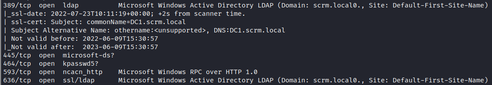
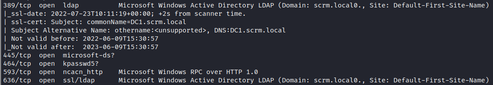

HTB Scrambled Write-up
Recon Work üïµ:
Starting out with scrambled I quickly ran a RustScan since this is a windows box and it'll prob have shit ton of ports open, I could've just used --min-rate 10000 with nmap but for some reason nmap keeps giving me false reports.

I ran nmap with -A parameter to gather more information about the open ports.
 

As we can see, this is an Active Directory box with kerberos security. However before attempting to exploit kerberos I first checked out the site on port 80.
Looks like an ISP site(?) Let's gather more info.
The NTLM authentication is off because someone hacked the website, interesting.

These just look like they're a rabbit hole ¯\_(ツ)_/¯
Foothold ü§Æ:
Ok, I don't think there's any vulnerabilities in the site itself. Let's take a look at the Active Directory.
Before attempting to login we must edit our /etc/hosts file and add the Active Directory domain. (Please ignore the olympus one, that's for another box.)

After that we can use kerbrute tool to enumerate Active Directory users.

You can find the user list I used in here. However I removed all the dots from the Surname list using this command because usernames can't have dots in them.

Anyways let's look at the results!

We have few usernames, let's brute force them. Before trying to use a gigantic username list like rockyou.txt I'll just try to login with using the usernames as password first.
I'll use elpscrk because it's cool + the passwords might be upper/lowercase idfk.
Here's our generated password list:

I went ahead and tried to login with all the usernames. And I could only access ksimpson's account.
We have access to Ksimpson's account but it's underprivilaged as fuck so we need to access another account if we want to get into the system.
I googled up kerberos exploits and I stumbled upon VBScrub's kerberoast tutorial, the funny thing is this is the same guy who made this machine, so it was pretty clear this was the way.
First of all let's go ahead and get TGT (Ticket-Granting-Ticket) as ksimpson user.
After that we must get Service Principal Names for ksimpson, that way we might be able to get access to other user's account.
This is where I got stuck a little bit because impacket-GetUserSPNs kept command failing due to BaseException error.
However I stumbled into VBScrub's Github Issue about this bug. Here's the solution if you're interested.
Before getting user spn's we must export KRB5CCNAME as kksimpson.ccache.

Now we can get user spn's
We need to crack sqlsvc's password hash.
Now let's dump sqlsvc user's secrets.

Using the credential's we gathered we can get a ticket for sqlsvc. Also we must NTLM encrypt Pegasus60 as the nthash.

We're in üòé

User ü•≥:
Let's try to find more passwords before getting a reverse shell.
There's few databeses we can choose from, although ScrambleHR looks the most interesting of them all.
Let's use ScrambleHR

We need to list tables.
We have ourselves a password for MiscSvc!
We need netcat to get a reverse shell.
Let's create a http server using python.

And curl netcat.exe.

We have shell now :D

But there's no flag in sqlsvc's desktop hmmm.
Maybe we need to change users? Let's try to login to MiscSvc with the password we found earlier.
Let's get one more fucking shell, it's like a shellception in my terminal.

Here's our user flag
Root üòé:
Let's search for the root flag. I noticed there was an app in the /Shares/IT/Apps/Sales Order Client directory.

I decided to download it so I can look into it a little more. üïµÔ∏è
In order to download the file I firstly copied the file to the /temp directory and then used powercat to transfer them.


It's an .NET program so we can't decompile it using Ghidra.
I uploaded them to my windows pc, unfortunetly we need to be on windows to use DNSpy.
DNSpy is an awsome tool to debug .NET applications
Looking trough the code I realized that there was a deserialization vulnerability inside this function:

I won't explain deserialization vulnerabilities rn because it's like 2 A.M. and I don't want to make this any longer than It should be. But you can check out PwnFunction's video about it on youtube.
In order to exploit this vulnerability we need to use ysoserial.net. This tool is also only available on windows.
We'll use BinaryFormatter parameter because BinaryFormatter is the Format type that is specified in the application's code.

Here's our payload, now how do we execute it?
Opening up the app it looks like we have a defult port that is 4411, let's connect to it using netcat.
Looks like we can execute commands.
It looks like our input is handled like this:
We need to use UPLOAD_ORDER; command to access the vulnerable function.
And we're root!
Analysis ü§ì:
I learned a lot while doing this box like deserialization vulnerabilities, .NET reverse engineering and more.
I wanna thank VBScrub for making this awsome box.
Also don't forget to check his channel out for more kerberos vulnerabilities: